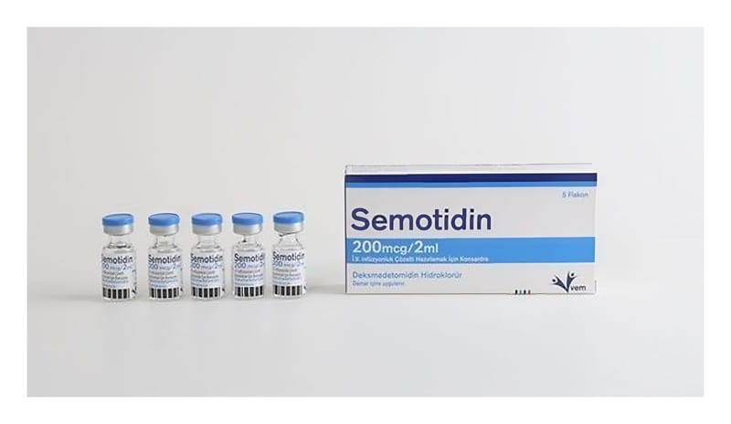

Semotidin 200 mcg/2 ml I.V. İnfüzyonluk Çözelti Hazırlamak İçin Konsantre (Demetom), 5 Adet

Ne için kullanılır
KT · Bölüm 1 SEMOTİDİN 5 adet flakon içeren ambalajlarda kullanıma sunulmaktadır. Her flakonda 2 mL konsantre infüzyon çözeltisi içerisinde etkin madde olarak 200 mcg deksmedetomidin (100 mcg/mL) içerir. SEMOTİDİN, renksiz ve berrak bir çözeltidir. SEMOTİDİN’in etkin maddesi olan deksmedetomidin diğer hipnotikler ve sedatifler (uyku vericiler ve sakinleştiriciler) olarak adlandırılan bir ilaç grubuna aittir. Deksmedetomidin
hastanelerin yoğun bakım bölümlerinde rahat soluk almaları için solunum yoluna boru yerleştirilmiş olan, uyarılabilir ve yönlendirilebilir olmayan hastaları sakinleştirmek için kullanılmaktadır.